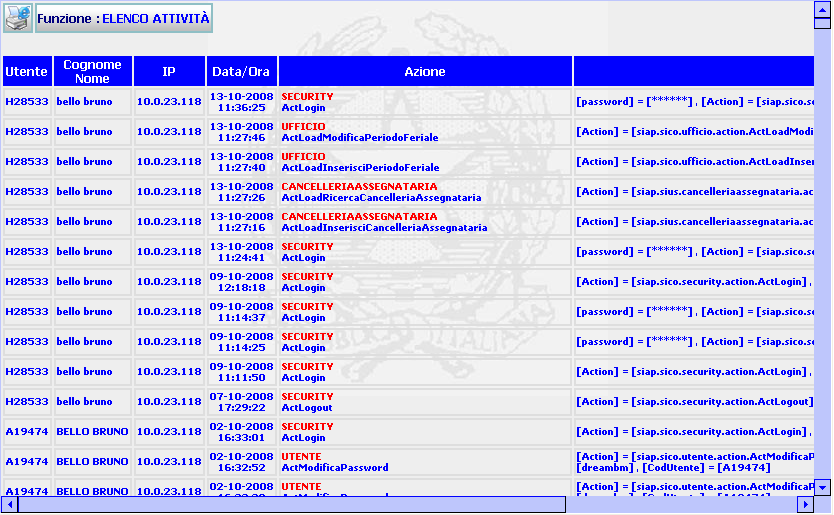

GENERALITA'
ELENCO ATTIVITA': La funzione, consente di visualizzare la lista delle attività che soddisfano la ricerca effettuata con la funzione Ricerca Log Attività
LE MASCHERE VIDEO
La funzione in esame viene realizzata attraverso l'utilizzo della seguente maschera che riporta gli elementi descrittivi e operativi delle attività:

PULSANTI
E'
presente il pulsante
 che fa parte del gruppo di
pulsanti di "Uso Comune".
che fa parte del gruppo di
pulsanti di "Uso Comune".